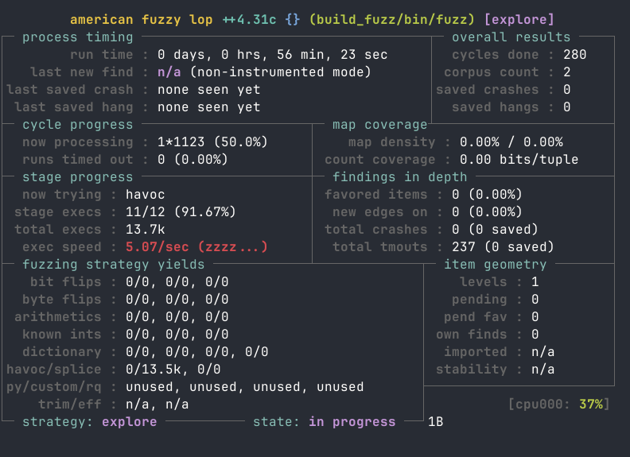

Introduction
This post was created in the aftermath of the bitcoin review club https://bitcoincore.reviews/33300 and the pr https://github.com/bitcoin/bitcoin/pull/33300, which I weren't able to attend but found the subject interesting and since I've been sleeping on how to fuzz bitcoin core and fuzzing in general.
What is fuzzing?
Taken from the bitcoin stackexchange answer https://bitcoin.stackexchange.com/questions/99955/what-is-fuzz-testing/99956#99956 fuzzing is defined as:In the paper "The Art, Science and Engineering of Fuzzing the authors define fuzzing as “a process of repeatedly running a program with generated inputs that may be syntactically or semantically malformed”.
As mentioned in the answer it is used both to prevent bugs and discovering bugs in programs. Being ahead of an attacker as a well as discovering limitations or alike in your program is where fuzzing shines.
Simple nix flake for bitcoin core
For the purpose of compiling bitcoin core and start fuzzing i
created a simple `nix flake`, with the needed dependencies. This
flake can off-course be further enhanced, but for the purposes
this post it will do. The important once for fuzzing with afl++
are the following aflplusplus
.
# This flake was initially generated by fh, the CLI for FlakeHub (version 0.1.10)
{
description = "Bitcoin dev flake";
inputs = {
flake-schemas.url = "https://flakehub.com/f/DeterminateSystems/flake-schemas/*.tar.gz";
nixpkgs.url = "https://flakehub.com/f/NixOS/nixpkgs/0.1.*.tar.gz";
};
outputs =
{
self,
flake-schemas,
nixpkgs,
}:
let
supportedSystems = [ "x86_64-linux" ];
forEachSupportedSystem =
f:
nixpkgs.lib.genAttrs supportedSystems (
system:
f {
pkgs = import nixpkgs { inherit system; };
}
);
in
{
schemas = flake-schemas.schemas;
devShells = forEachSupportedSystem (
{ pkgs }:
{
default = pkgs.mkShell {
packages = with pkgs; [
nixpkgs-fmt
autoconf
pkg-config
libtool
automake
coreutils-full
python3
sqlite
boost
cmake
libevent
clang
zeromq
bc
clang-analyzer
qrencode
db4
sqlite
libsystemtap
libclang
python312
llvm_14
# libsForQt5.qt5.qtbase
# libsForQt5.qt5.qttools
# libsForQt5.qt5.qtwayland
libsForQt5.qt5.full
aflplusplus
];
};
}
);
};
}
How to fuzz bitcoin core with Afl++
If you haven't done this yet. Clone bitcoin core.
> git clone https://github.com/bitcoin/bitcoin
# Compile bitcoin core with the corect afl++ compiler
> cmake -B build_fuxx=afl-clang-lto DCMAKE_CXX_COMPILER=afl-clang-lto++ -DBUILD_FOR_FUZZING=ON
> cmake --build build_fuzz
> mkdir -p inputs/ outputs/
> head -c 1000 /dev/urandom > inputs/input.dat
# I had to add the -n flag
> FUZZ=cmpctblock afl-fuzz -n -i inputs -o outputs -- build_fuzz/bin/fuzz
Remember to also change the `FUZZ` variable depending on what you want to fuzz, I'd also recommend to checkout bitcoin core's fuzzing docs as it is most likely more up to date as well as afl++ docs.
